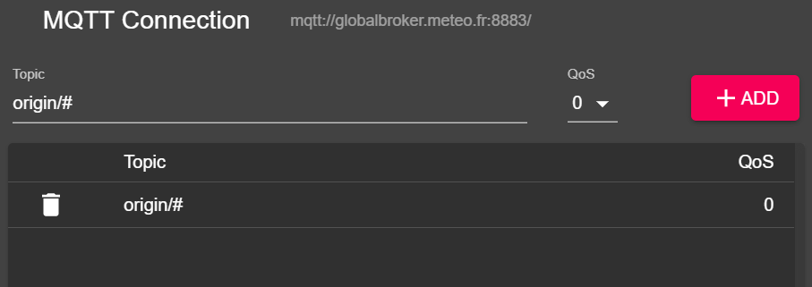

Conectando ao WIS2 por MQTT
Resultados de aprendizagem
Ao final desta sessão prática, você será capaz de:
- conectar ao Corretor Global WIS2 usando o MQTT Explorer
- revisar a estrutura de tópicos do WIS2
- revisar a estrutura de mensagens de notificação do WIS2
Introdução
O WIS2 usa o protocolo MQTT para anunciar a disponibilidade de dados de clima/temperatura/água. O Corretor Global WIS2 se inscreve em todos os Nós WIS2 na rede e republica as mensagens que recebe. O Cache Global se inscreve no Corretor Global, baixa os dados na mensagem e depois republica a mensagem no tópico cache com uma nova URL. O Catálogo de Descoberta Global publica metadados de descoberta do Corretor e fornece uma API de busca.
Este é um exemplo da estrutura de mensagem de notificação WIS2 para uma mensagem recebida no tópico origin/a/wis2/br-inmet/data/core/weather/surface-based-observations/synop:
{
"id": "59f9b013-c4b3-410a-a52d-fff18f3f1b47",
"type": "Feature",
"version": "v04",
"geometry": {
"coordinates": [
-38.69389,
-17.96472,
60
],
"type": "Point"
},
"properties": {
"data_id": "br-inmet/data/core/weather/surface-based-observations/synop/WIGOS_0-76-2-2900801000W83499_20240815T060000",
"datetime": "2024-08-15T06:00:00Z",
"pubtime": "2024-08-15T09:52:02Z",
"integrity": {
"method": "sha512",
"value": "TBuWycx/G0lIiTo47eFPBViGutxcIyk7eikppAKPc4aHgOmTIS5Wb9+0v3awMOyCgwpFhTruRRCVReMQMp5kYw=="
},
"content": {
"encoding": "base64",
"value": "QlVGUgAA+gQAABYAACsAAAAAAAIAHAAH6AgPBgAAAAALAAABgMGWx1AAAM0ABOIAAAODM0OTkAAAAAAAAAAAAAAKb5oKEpJ6YkJ6mAAAAAAAAAAAAAAAAv0QeYA29WQa87ZhH4CQP//z+P//BD////+ASznXuUb///8MgAS3/////8X///e+AP////AB/+R/yf////////////////////6/1/79H/3///gEt////////4BLP6QAf/+/pAB//4H0YJ/YeAh/f2///7TH/////9+j//f///////////////////v0f//////////////////////wNzc3Nw==",
"size": 250
},
"wigos_station_identifier": "0-76-2-2900801000W83499"
},
"links": [
{
"rel": "canonical",
"type": "application/bufr",
"href": "http://wis2bra.inmet.gov.br/data/2024-08-15/wis/br-inmet/data/core/weather/surface-based-observations/synop/WIGOS_0-76-2-2900801000W83499_20240815T060000.bufr4",
"length": 250
}
]
}
Nesta sessão prática, você aprenderá como usar a ferramenta MQTT Explorer para configurar uma conexão de cliente MQTT com um Corretor Global WIS2 e poderá visualizar mensagens de notificação do WIS2.
O MQTT Explorer é uma ferramenta útil para navegar e revisar a estrutura de tópicos de um determinado corretor MQTT para revisar dados sendo publicados.
Observe que o MQTT é usado principalmente para comunicação "máquina a máquina"; isso significa que normalmente haveria um cliente analisando automaticamente as mensagens conforme são recebidas. Para trabalhar com MQTT programaticamente (por exemplo, em Python), você pode usar bibliotecas de cliente MQTT como paho-mqtt para se conectar a um corretor MQTT e processar mensagens recebidas. Existem inúmeros softwares de cliente e servidor MQTT, dependendo de suas necessidades e ambiente técnico.
Usando o MQTT Explorer para conectar ao Corretor Global
Para visualizar mensagens publicadas por um Corretor Global WIS2 você pode usar o "MQTT Explorer" que pode ser baixado do site do MQTT Explorer.
Abra o MQTT Explorer e adicione uma nova conexão ao Corretor Global hospedado pela MeteoFrance usando os seguintes detalhes:
- host: globalbroker.meteo.fr
- port: 8883
- username: everyone
- password: everyone

Clique no botão 'AVANÇADO', remova os tópicos pré-configurados e adicione os seguintes tópicos para se inscrever:
origin/a/wis2/#

Note
Ao configurar inscrições MQTT, você pode usar os seguintes curingas:
- Nível único (+): um curinga de nível único substitui um nível de tópico
- Nível múltiplo (#): um curinga de nível múltiplo substitui vários níveis de tópicos
Neste caso, origin/a/wis2/# inscreverá em todos os tópicos sob o tópico origin/a/wis2.
Clique em 'VOLTAR', depois em 'SALVAR' para salvar seus detalhes de conexão e inscrição. Em seguida, clique em 'CONECTAR':
As mensagens devem começar a aparecer em sua sessão do MQTT Explorer como segue:

Você agora está pronto para começar a explorar os tópicos e a estrutura de mensagens do WIS2.
Exercício 1: Revisar a estrutura de tópicos do WIS2
Use o MQTT para navegar pela estrutura de tópicos sob os tópicos origin.
Question
Como podemos distinguir o centro WIS que publicou os dados?
Clique para revelar a resposta
Você pode clicar na janela do lado esquerdo no MQTT Explorer para expandir a estrutura de tópicos.
Podemos distinguir o centro WIS que publicou os dados olhando para o quarto nível da estrutura de tópicos. Por exemplo, o seguinte tópico:
origin/a/wis2/br-inmet/data/core/weather/surface-based-observations/synop
nos diz que os dados foram publicados por um centro WIS com o id de centro br-inmet, que é o id do Instituto Nacional de Meteorologia - INMET, Brasil.
Question
Como podemos distinguir entre mensagens publicadas por centros WIS que hospedam um gateway GTS-to-WIS2 e mensagens publicadas por centros WIS que hospedam um nó WIS2?
Clique para revelar a resposta
Podemos distinguir mensagens vindas de um gateway GTS-to-WIS2 olhando para o id de centro na estrutura de tópicos. Por exemplo, o seguinte tópico:
origin/a/wis2/de-dwd-gts-to-wis2/data/core/I/S/A/I/01/sbbr
nos diz que os dados foram publicados pelo gateway GTS-to-WIS2 hospedado pelo Deutscher Wetterdienst (DWD), Alemanha. O gateway GTS-to-WIS2 é um tipo especial de publicador de dados que publica dados do Sistema Global de Telecomunicações (GTS) para o WIS2. A estrutura de tópicos é composta pelos cabeçalhos TTAAii CCCC para as mensagens GTS.
Exercício 2: Revisar a estrutura de mensagens do WIS2
Desconecte do MQTT Explorer e atualize as seções 'Avançadas' para mudar a inscrição para os seguintes tópicos:
origin/a/wis2/+/data/core/weather/surface-based-observations/synopcache/a/wis2/+/data/core/weather/surface-based-observations/synop

Note
O curinga + é usado para se inscrever em todos os centros WIS.
Reconecte ao Corretor Global e aguarde as mensagens aparecerem.
Você pode visualizar o conteúdo da mensagem WIS2 na seção "Valor" no lado direito. Tente expandir a estrutura de tópicos para ver os diferentes níveis da mensagem até alcançar o último nível e revisar o conteúdo da mensagem de uma das mensagens.
Question
Como podemos identificar o carimbo de data/hora em que os dados foram publicados? E como podemos identificar o carimbo de data/hora em que os dados foram coletados?
Clique para revelar a resposta
O carimbo de data/hora em que os dados foram publicados está contido na seção properties da mensagem com a chave pubtime.
O carimbo de data/hora em que os dados foram coletados está contido na seção properties da mensagem com a chave datetime.

Question
Como podemos baixar os dados do URL fornecido na mensagem?
Clique para revelar a resposta
O URL está contido na seção links com rel="canonical" e definido pela chave href.
Você pode copiar o URL e colá-lo em um navegador web para baixar os dados.
Exercício 3: Revisar a diferença entre os tópicos 'origin' e 'cache'
Certifique-se de que ainda está conectado ao Corretor Global usando as inscrições de tópicos origin/a/wis2/+/data/core/weather/surface-based-observations/synop e cache/a/wis2/+/data/core/weather/surface-based-observations/synop conforme descrito no Exercício 2.
Tente identificar uma mensagem para o mesmo id de centro publicada em ambos os tópicos origin e cache.
Question
Qual é a diferença entre as mensagens publicadas nos tópicos origin e cache?
Clique para revelar a resposta
As mensagens publicadas nos tópicos origin são as mensagens originais que o Corretor Global republica dos Nós WIS2 na rede.
As mensagens publicadas nos tópicos cache são as mensagens cujos dados foram baixados pelo Cache Global. Se você verificar o conteúdo da mensagem do tópico que começa com cache, verá que o link 'canonical' foi atualizado para um novo URL.
Existem vários Caches Globais na rede WIS2, então você receberá uma mensagem de cada Cache Global que baixou a mensagem.
O Cache Global só baixará e republicará mensagens que foram publicadas na hierarquia de tópicos ../data/core/....
Conclusão
Parabéns!
Nesta sessão prática, você aprendeu:
- como se inscrever nos serviços do Corretor Global WIS2 usando o MQTT Explorer
- a estrutura de tópicos do WIS2
- a estrutura de mensagens de notificação do WIS2
- a diferença entre dados essenciais e recomendados
- a estrutura de tópicos usada pelo gateway GTS-to-WIS2
- a diferença entre as mensagens do Corretor Global publicadas nos tópicos
originecache